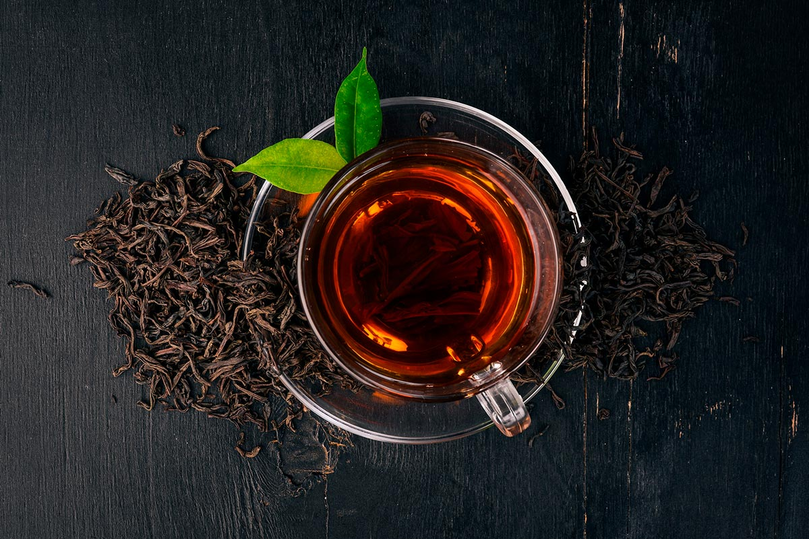

Чем отличаются друг от друга и чем
полезны разные виды чая
В мире существует не только черный и зеленый чай,
но и множество других разновидностей этого
ароматного напитка
Вот уже на протяжении многих лет, десятилетий и даже столетий чай знают и любят во многих странах
мира (а некоторые из них даже успели обзавестись собственными чайными традициями). В нашей стране
этот напиток также пользуетсябольшой популярностью:чай пьют и как самостоятельный напиток, и как
ароматное дополнение к вкусному десерту.
Одни люди предпочитают чай без добавок, другим нравится вкус напитка в тандеме с мятой, чабрецом,
мелиссой или другими ингредиентами. Чай бывает горячим и холодным‚ рассыпным и пакетированным,
прессованным и скрученным в маленькие «жемчужинки» или причудливой формы фигуры.
А знаете ли вы, что в мире существует не только черный и зеленый чай, но и множество других
разновидностей этого ароматного напитка? О некоторых из них мы и расскажем вам в этой статье.
Черный чай
Своей темной окраской и характерным вкусом чайный лист обязан процессу ферментации. Получившийся
напиток считается не только вкусным, но и весьма полезным. К примеру, содержащийся в чае кофеин
обладает тонизирующим действием и может обеспечить прилив энергии, к примеру, на старте рабочего
дня. При этом действует такой «допинг» куда мягче, нежели кофеин в кофейной чашке.

Также содержащиеся в чае полезные вещества помогают поддерживать здоровье зубов и десен‚ а сам
напиток в целом может оказывать положигельное воздействие на иммунитет, принести пользу
сердечно-сосудистой системе И прекрасно утоляет жажду. К слову, некоторые из этих свойств присущи
и другим видам чая.
Зеленый чай
Кофеина в таком чае меньше, чем в черном, а вот других полезных компонентов более чем достаточно.
Считается, что этот напиток помогает выводить из организма токсины и другие неполезные для нас
вещества,положительно влияет на обмен веществ и оказывает заметный косметический эффект.Вдобавок
этот вид чая также полезен для зубов и десен‚ помогает укрепить иммунитет и даже справиться с
простудой (для этого зеленый чай нередко советуют употреблять в компании с медом).
Каркаде
Этот необычный напиток узнаваемого рубинового цвета и с ярко выраженной кислинкой во вкусе
изготавливаетсявовсе не из листков чайного дерева, а из цветков гибискуса. Каркаде нередко
называют «напитком фараонов»,что весьма красноречиво говорит о том, насколько он популярен
в Египте.
Во многих странах каркаде считается помощником от многих недугов, ведь в нем содержится немало
витаминов, полезных кислот и других ценных веществ. Ему приписывают способность положительно
влиять на сердце и сосуды, бороться со стрессами и укреплять иммунитет.
Польза без вреда
Чай считается низкокалорийным напитком, но только в том случае, если не добавлять в него сахар
и не сопровождать каждую чашку обильными десертами. К тому же у чая есть и свои противопоказания
(пусть и немного), с которыми стоит ознакомиться заранее.
Например, не стоит злоупотреблять этим напитком на ночь, если есть проблемы со сном, при гипертонии
есть риск еще большего повышения давления после чашки крепкого чая, да и беременным женщинам и
маленьким детям также стоит относиться к чаю с осторожностью.
Белый чай
Данный вид чая отличается тем, что собранные для его изготовления листочки подвергаются
минимальной обработке. Свое название этот вид чая получил из-за светлых ворсинок, которыми
покрыты чайные почки и молодые листочки, которые собираются для данного напитка. Вкус
белого чая получается нежным, с цветочными или сладковатыми нотами. Правда, большую часть
сортов этого чая не рекомендуется заваривать слишком горячей водой, дабы по максимуму
сохранить его полезные свойства.

К слову о пользе, принято считать, что в белом чае содержится много антиоксидантов,
китаминов и других полезных веществ, благодаря которым готовый напиток помогает расслабиться
после насыщенного или волнительного дня, способствует укреплению иммунитета, а также
положительно сказывается на здоровье зубов.
Улун
Название данного вида чая также может произноситься как «оолонг», что в переводе означает
«черный дракон». По степени ферментации улун расположился примерно посередине между черным
и зеленым чаем, при этом он обладает характерным вкусом и ароматом.
Улуны производятся из цельного листа и, как правило, ферментированы неравномерно.Также нередко
выделяют светлые и темные сорта улунов.
За какие же полезные свойства принято ценить данный вид чая? Улун считается источником
различных витаминов и эфирных масел, благодаря которым нередко отмечают его способность
положительно влиять на здоровье сердечно-сосудистой системы, помочь в деле борьбы за
красивую фигуру и очистить организм от вредных веществ.
Пуэр
История данного вида чая насчитывает не одно столетие, причем практически все это время
данный чай считался очень полезным напитком. Однако сразу стоит отметить, что пуэр — напиток
на любителя и может прийтись по вкусу далеко не каждому. Также считается, что при правильном
хранении с каждым годом этот чай может становиться все лучше и лучше
Спорным вопросом является влияние возраста пуэра на его вкусовые качества. Часто можно встретить заявления
продавцов о том, что пуэр со временем только улучшается во вкусе. В реальности это зависит от технологии
его производства. Шен пуэры отличаются тем, что можно самостоятельно контролировать степень ферментации,
и, соответственно, вкус чая. Этот процесс требует значительного времени: через 2—3 года хранения из чая
начинает уходить горечь и грубость свежего листа. Уникальным же, по мнению знатоков, чай становится по
истечении 10—20 лет (при условии правильного хранения). Шу пуэры при длительном хранении мало меняются,
так как технология их производства предполагает быструю ферментацию с последующей её остановкой без стадии
дозревания. Есть мнение, что со временем из шу пуэров уходит так называемый «вкус и запах мокрых куч», что
улучшает их характеристики.